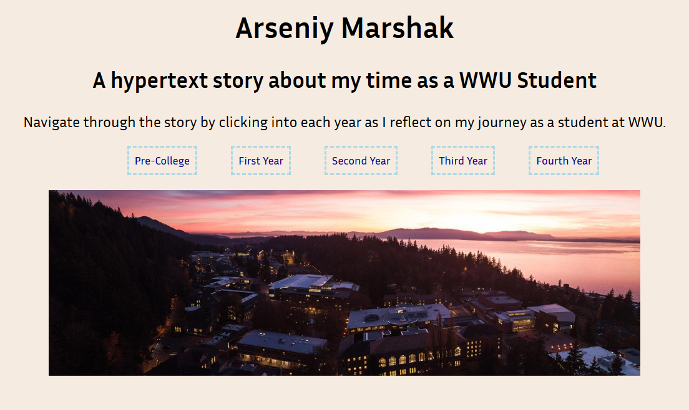

Assignment 1

Hypertext Story/Self Portrait
Description
In this assignment I used HTML and CSS to create a hypertext story
of my journey as a student at WWU. The goal of the assignment is
to create a hypertext story or self portrait to demonstrate the
internet's capability as a medium of communication.